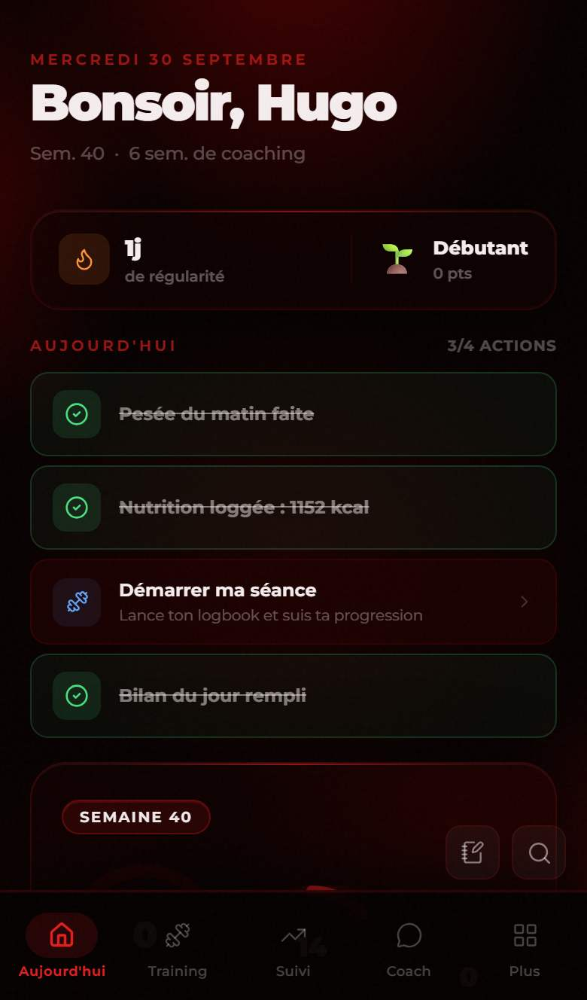

◆ Aujourd'hui
Ta journée, en un seul écran
Tu ouvres l'appli, tu sais quoi faire. Bilan, repas, séance, pas : tout ce qui compte aujourd'hui est là, dans l'ordre, et tu coches au fur et à mesure.
Gratuit, sans carte bancaire Sur ton téléphone et ton ordinateur

◆ Ce que tu peux faire
Aujourd'hui, concrètement
Les tâches du jour
Bilan du matin, bilan du soir, repas, séance : chaque chose à faire apparaît avec son état. Ce qui est fait est coché, ce qui reste saute aux yeux.
La séance prévue
Tu vois la séance du jour, ce qu'il faut prévoir (accessoires, créneau utile) et tu la lances en un geste. Jour de repos ? L'écran te le dit aussi.
Tes anneaux de constance
Pas, nutrition et régularité de la semaine sous forme d'anneaux, pour voir en un coup d'œil si tu tiens le rythme.
Seulement ce qui te sert
L'accueil s'adapte à ce que tu as choisi dans Mon appli : si tu ne suis pas ton sommeil, il n'en parle pas.
◆ Pas à pas
Comment ça se passe
Le matin
Tu ouvres l'appli : ton bilan du matin (poids, nuit) t'attend en haut de l'écran.
Pendant la journée
Tu notes tes repas, tu lances ta séance, tes pas montent. Chaque action coche sa case.
Le soir
Ton bilan du soir boucle la journée. Tu vois ce qui a été tenu, sans culpabiliser pour le reste.
◆ Guides pas à pas
Bien t'en servir
◆ Questions fréquentes
Aujourd'hui : tes questions
Est-ce que l'écran Aujourd'hui est le même pour tout le monde ?
Non. Il se construit avec ce que tu suis vraiment (réglable dans Mon appli) et, si tu as un coach, avec ce qu'il t'a programmé.
J'ai raté mon bilan hier, je peux le rattraper ?
Oui. Le bilan permet de choisir une date passée pour compléter un jour oublié.
◆ À découvrir aussi
Ça va bien avec
Bilan du jour
Poids, sommeil, pas, énergie, moral : les bons chiffres, en quelques touches.
En savoir plus Membres et coachsEntraînement
Programme, séance guidée, charges et records : chaque série est gardée.
En savoir plus Membres et coachsNutrition
Plan alimentaire, repas alternatifs, recettes et calories qui remontent toutes seules.
En savoir plus Membres et coachsMon appli
Quelques questions, et l'appli ne garde que ce qui te sert.
En savoir plusPrêt à t'y mettre ?
L'inscription est gratuite et sans carte bancaire. Tu peux commencer aujourd'hui.